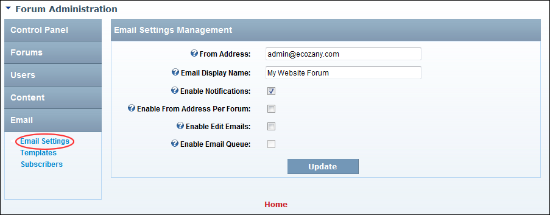

Managing Email Settings
How to enable or disable email notifications for the Forum module as well as configure notification settings.
- Go to the Forum Administration page. See "Navigating to the Forum Admin Page"
- In the right-hand panel, select Email > Email Settings. This displays the Email Management section.
- In the From Address text box, enter the from email address for all outgoing forum emails.
- In the Email Display Name text box, enter the friendly name to be used for outgoing email notifications from this forum.
- At Email Notifications, to enable email notification for this module. This displays 3 additional settings - OR - to disable. If unchecked, skip to Step 9.
- At Enable From Address Per Forum, to enable the From address to be set on individual forums. See "Setting Forum Email" - OR - to disable and use the address set in Step 3 above for all forums.
- At Enable Edit Emails, to send a notification email to users when posts are edited - OR - to disable.
- At Enable Email Queue, to send notifications using the schedule - OR - this feature is disabled.
-
Click the Update button.

Managing email notifications from the Forum module
-
See "Enabling/Disabling a Task"